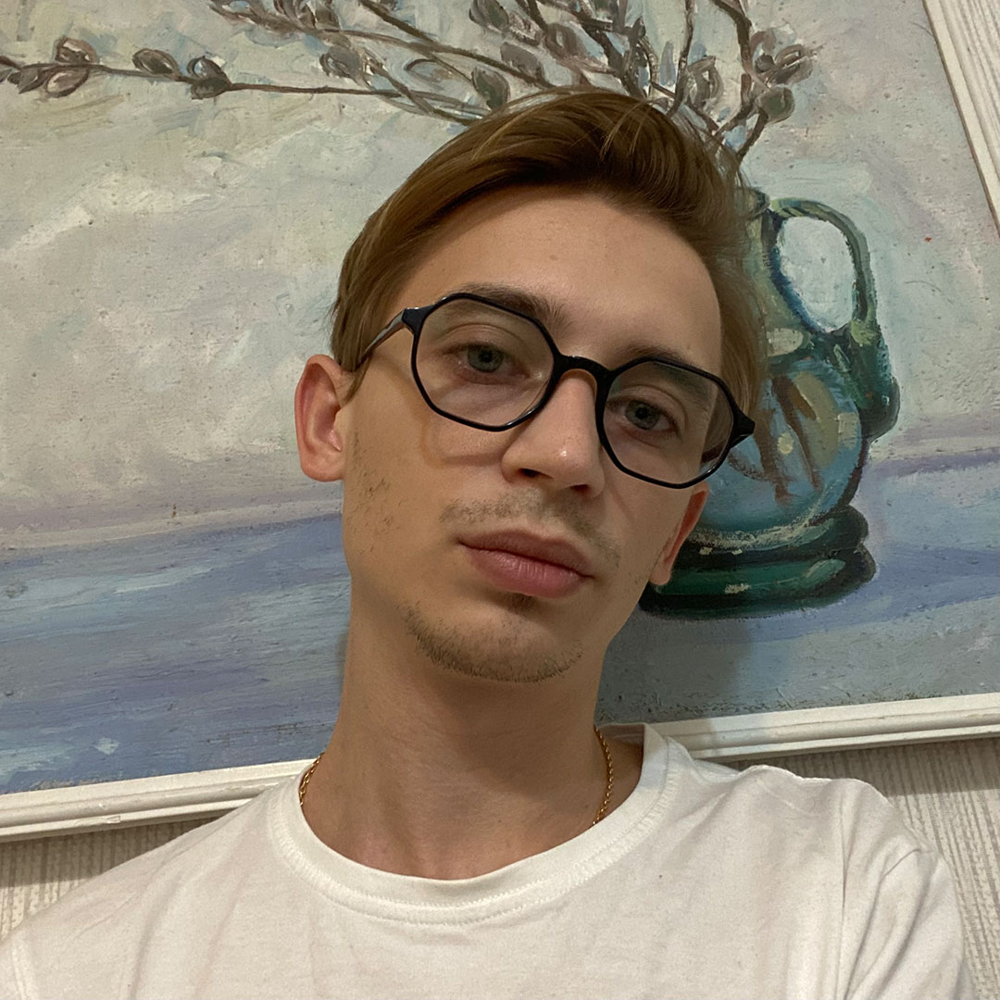

Artem Nistuley, Software Engineer

November 6, 2021
I’m a software engineer with strong Frontend / Full Stack Developer background.
A few words about skills and experience:
- 7+ years of experience
- Tech Lead experience about 1 year
- JavaScript (ES6+), Vue, React
- Vue Ecosystem (Vuex, Vue Router, Vue CLI)
- HTML5 / CSS3
- PHP & MySQL
- Bedrock, WordPress, WooCommerce
- Git
- Figma, InVision, Photoshop
Experience
-
Senior Frontend Engineer at Vcita / MWDN, 11/2020 – Present
- Frontend development, JavaScript, Vue.js, Vuex, Vue Router, Python, Sass, Git
- Working on WiseStamp app
- Developing new components, pages using Vue.js and making changes to existing ones
- Developing email templates for signatures
- Refactoring and code review
-
Frontend Engineer / Tech Lead at RingCentral / AB Soft, 1/2020 – 10/2020
- Frontend development, JavaScript, AEM, HTL, Java, Less, Git
- Responsible for technical issues at Glip
- Refactoring and code review
- Migrated the project to AEM 6.4
-
Frontend Engineer at RingCentral / AB Soft, 9/2017 – 1/2020
- Frontend development, JavaScript, AEM, HTL, Java, Less, Git
- Worked on Ringcentral project
- Developed reusable components for building pages
- Took part in the migration of the project to AEM 6.4
-
Frontend Mentor at Web Hero School, 12/2018 – 6/2019
- Inspection and review of students’ code
- Consultations and support for students
-
Full Stack Developer at Memira / Beetroot, 10/2016 – 9/2017
- Full Stack development, JavaScript, Sass, Bedrock, PHP, Composer, Gulp, Yarn, Git
- Worked on Memira project
- Developed reusable modules for building pages based on design
- Independent work on the project
- Frontend Developer at Private Company, 12/2015 – 10/2016
- Frontend Developer at Mobios, 3/2015 – 12/2015
Skills
HTML5/CSS3, JavaScript (ES6+), Vue, Vuex, Vue Router, React, jQuery, OOP, PostCSS, Sass/Less, BEM, PHP/MySQL, Bedrock, WordPress, WooCommerce, AEM, Parcel, Composer, Yarn/Npm, Git, Figma, InVision, Photoshop
My projects
Media
© 2021
E-mail ·
Linkedin ·
GitHub